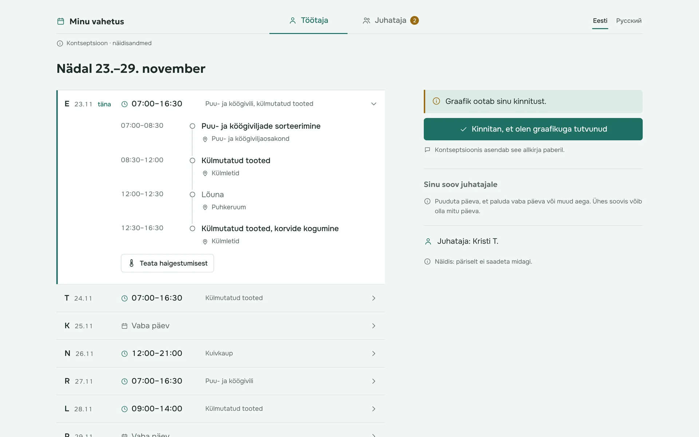
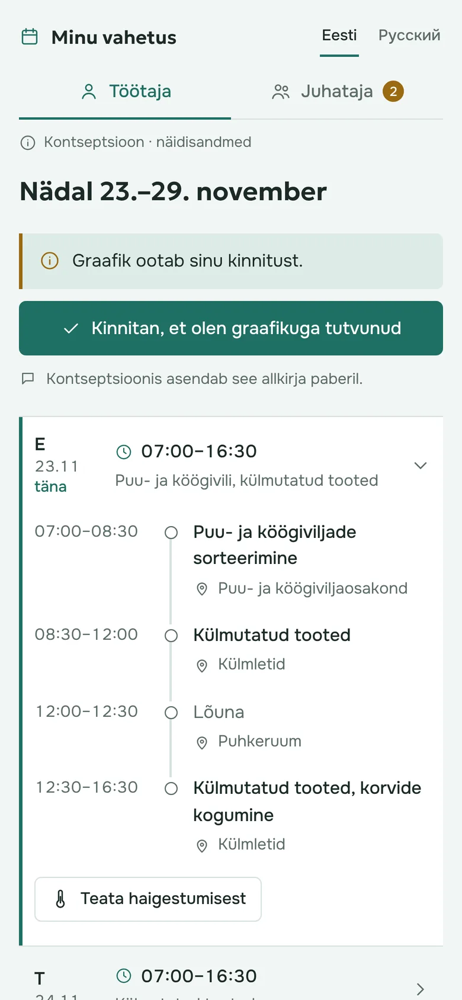
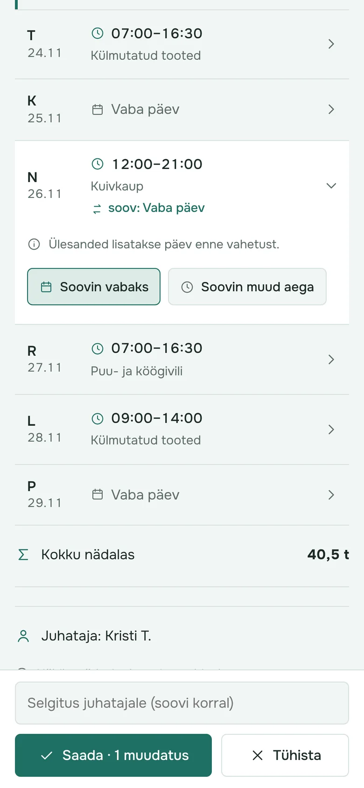
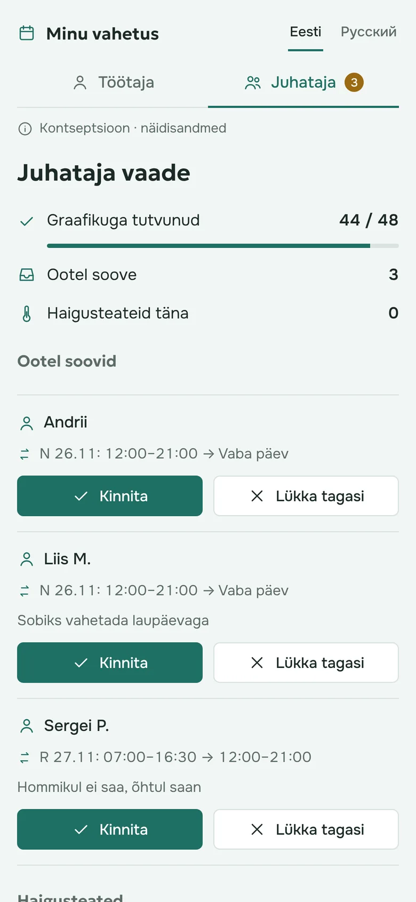

04Minu vahetus· Shift schedule for shop staff · concept
“When do I work tomorrow, and what will I be doing?”
Minu vahetus (“My shift”) is a schedule for shop-floor staff. I work in a supermarket, and this is the tool I wanted on my own first day.
- Role
- Solo: the problem comes from my own job. UX, UI, clickable prototype
- When
- November 2026
- Built with
- HTML, CSS, JavaScript. AI: Claude
- Status
- Concept with sample data. Next step: show it to the store manager

01The question
The schedule is on paper. The tasks are on a wall.
The weekly schedule is handed out on paper for a signature. What exactly you will do today is written on a card in a back room, so you learn it only after you arrive. To report sick you need the manager’s phone number.
None of this is anyone’s fault; it is how shops have always worked. But each of the three is a small daily question that a phone can answer before you leave home.
02What I decided
- 1
One screen: the week
The worker sees seven rows. Today is open and shows the tasks on a timeline, with the department for each one.
- 2
A change happens on the day itself
Tap a day, choose “I want this day off” or “another time”. Several days go to the manager as one request, with one optional note.
- 3
A tap replaces the signature
“I have seen the schedule” is one button. If the manager changes the week afterwards, the app asks to confirm again.
- 4
Sick note in three fields
From which day, for how long, anything to add. It goes to the manager without anyone needing a phone number.
- 5
The manager sees what needs an answer
How many people have seen the schedule, which requests are waiting, who is sick today. Nothing else on the first screen.
- 6
Estonian and Russian
The team speaks both, so the switch is in the header and every label exists in both languages.
03The screens



04The turn
The first version had four tabs. I could not explain it.
Schedule, Tasks, Requests and Profile looked complete, but a request lived in a different place from the day it changed. I rebuilt it around two roles with one screen each, and moved the request onto the day.
It is still a concept: the data is invented and nobody but me has used it. The honest next step is to put it in front of my store manager and see which part would actually get opened.